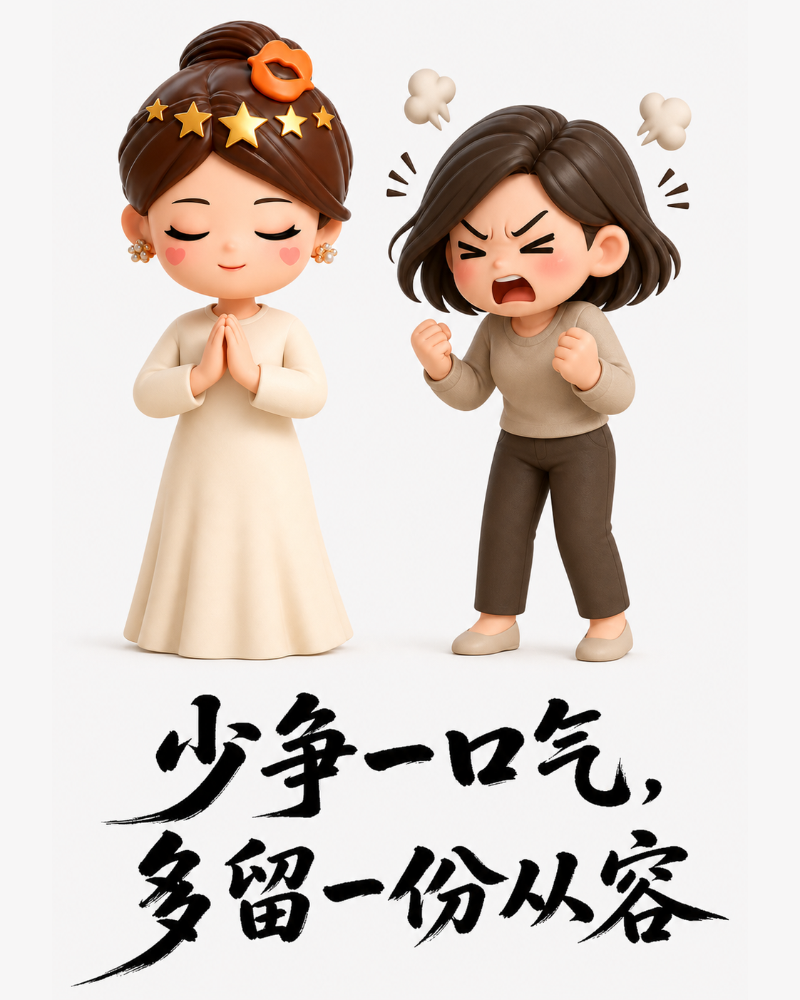
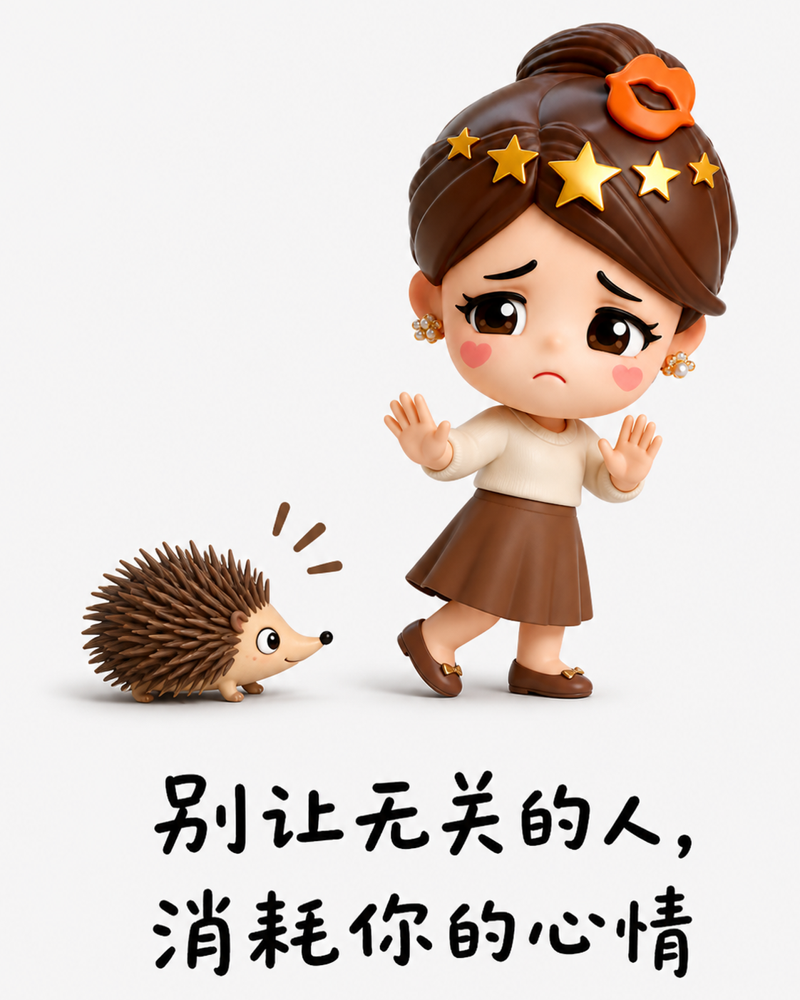
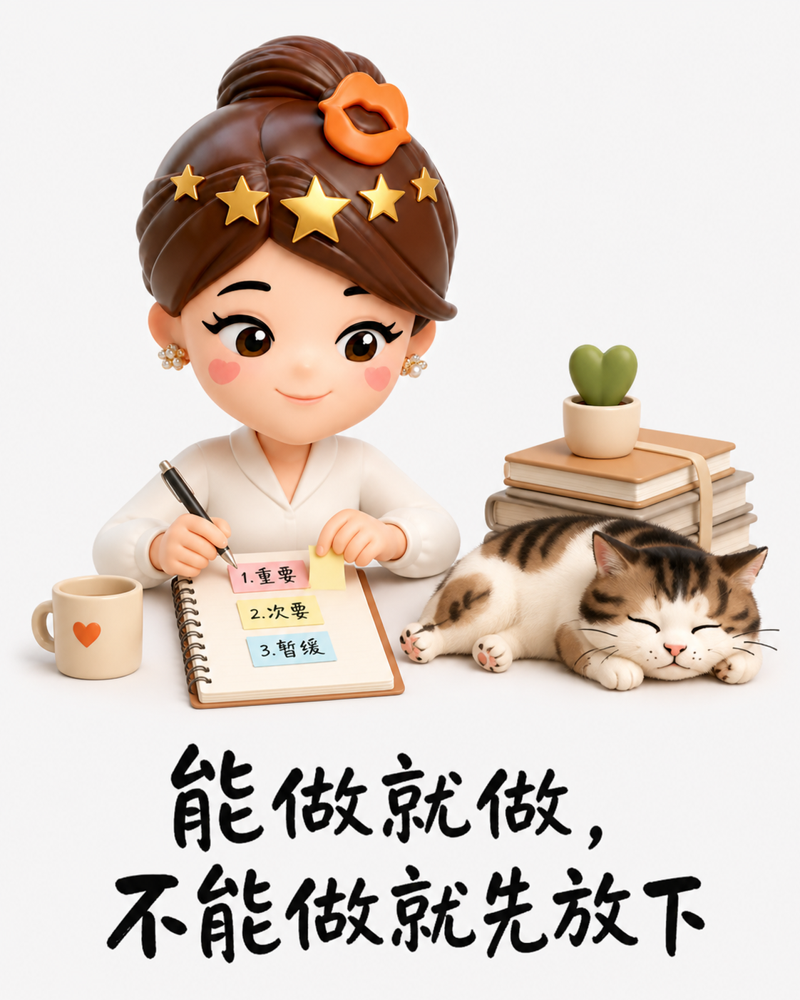

别急着发火，把日子过轻一点
情绪上来，先缓一下
牛奶洒了、排队被插、孩子挨批，火气总比判断先到。停几秒，许多麻烦其实没有想象中严重。

理解不是认输
看清对方的难处，也问明事情的前因。少一次争执，是把精力留给真正值得解决的问题。

把心力留给好日子
不让别人的失误长期占据情绪，也别拿小事反复惩罚自己。能处理就处理，暂时不能处理就放下。

牛奶洒了、排队被插、孩子挨批，火气总比判断先到。停几秒，许多麻烦其实没有想象中严重。

看清对方的难处，也问明事情的前因。少一次争执，是把精力留给真正值得解决的问题。

不让别人的失误长期占据情绪，也别拿小事反复惩罚自己。能处理就处理，暂时不能处理就放下。
